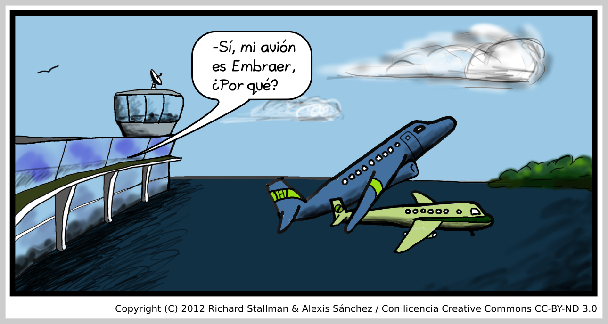
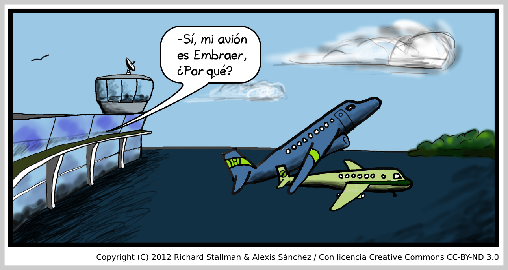

humor
Earth Under Attack from Planet Koch
A nest-group or "brotherhood" of aliens from the planet Koch discovered Earth around 30 years ago, and sought to colonize our planet. They saw just two obstacles: first, humans were technologically advanced enough to repel a single Kochian brotherhood in open warfare; second, Earth was too cold for Kochians -- about 6 degrees C too cold. The aliens struggled to invent a way to Koch-form our planet, but after some observations realized that was unnecessary: we would do it for them.
We were already doing it for them. The global heating we were already starting to cause would, in a century or two, bring Earth's temperature to match that of planet Koch. The resulting agricultural failures and food wars would result in the breakdown of the globalized trade and manufacturing system, and human technology with them. The remaining humans, fighting among themselves with their residual weapons, would be no match for the aliens.
However, they needed to take steps to prevent us from avoiding this fate. Some humans had already figured out where their practices were heading; governments were starting to organize to stabilize Earth's climate. So the Kochians sneakily took over the major Earth oil companies, then used them to set up plutocratic control over the principal human governments, media, science museums, and so on.
Once plutocratic control was established, the Koch brothers used it to direct humanity into burning increasing quantities of fossil fuels and racing towards the conversion of Earth into a world more suitable for Kochians than for humans.
Humanity hardly resisted; it was not united. Indeed, many greedy human individuals, set on gaining more riches for themselves no matter what the harm to humanity, spontaneously joined the effort without knowing who was ultimately behind it. The oil companies' money convinced many to stand idly by.
Foretastes of coming disaster are now appearing, and some humans are starting to defy the Kochians and plutocrats. But it is almost too late to avoid the disaster. Can humanity throw off the control of the Kochians and save Earth? It's up to us.
On doxing, and how to spell it
There is a controversy about the proper spelling of the word "doxing"; some write it with a double x, but that is a mistake.
The digraph "xx" is pronounced like j in Spanish or the "ch" in German "ach". It is used with computers a replacement for the letter exx, which has a single stroke going down to the right and two parallel strokes going down to the left, because computers generally can't handle that letter. The exx is derived from the Greek letter chi, and pronounced like it; but since that Greek letter looks like our "x", it had to be modified with an added parallel stroke when it was introduced into English.
Thus, we usually have to write the name of the oil company as "Exxon", though its proper spelling is "e exx o n". (Don't make the mistake of pronouncing "Exxon" like "exon"; you will appear unsophisticated.)
The exx also gives us an unambiguous way to phonetically spell the exclamation of disgust, "yexx" or "ixx".
Since the word "doxing" is derived from "docs", it should be written with a single "x", as it is pronounced.
As for the ethics of doxing, I think it is ethical to reveal the home addresses of people who have committed grave crimes such as torture and aggressive war if the state declines to prosecute them, but it is wrong to do that to people one simply disagrees with.
Futon Physics
Someone posted that he had a futon for sale, so I responded with this message.
The futon is the elementary particle of the hack field. If you have succeeded in isolating a futon, have you measured its properties? For instance, what is its mass? Did you ever experience a magnetic moment on it and get a charge? Does it appear strange? Does it have charm? Has it been slepton? Can it interact with Schrodinger's cat to create virtual muons?
If you intend to sell the futon, I think you ought to tell potential buyers what its half-life is, and what it decays into. Pillows and sheets? Some nearly massless bedbugs?
On the other hand, if it's a stable futon, what kind of animals were using it, and did they associate any dark matter with it?
A Spanish cartoon: La Ruleta Española
Here I'm Wearing My Power Tie

Here Im Struggling To Open A Bottle Of Water

My application to an join Marian Henley's Ex Boyfriends List
From: Richard Stallman <rms@gnu.org>
To: <mkhenley@prodigy.net>
Subject: Application for membership in Ex Boyfriends List
Reply-to: rms@gnu.org
Message-Id: <E1ArII1-0007Uk-HA@fencepost.gnu.org>
Date: Thu, 12 Feb 2004 09:58:05 -0500
text follows this line-->
After reading what you've said about your Ex Boyfriends List,
I wonder if you could tell me how to apply for a place in it?
My motivation is not that I would like the cachet of being on the
list. Rather I hope that the application process, of being judged for
a place on the list, could be exciting or even joyous. If it takes you
some time to decide whether I belong on the list, I won't mind
waiting.
I'm aware of the theoretical possibility that the process might not
reach a conclusion, that I might remain permanently in limbo pending a
decision about whether I am to become "ex". I know this is unlikely,
and I'm willing to take the risk.
For information about me, see my personal site, stallman.org.
My work is described in www.gnu.org.
Date: Sat, 21 Feb 2004 10:56:14 -0800 (PST)
From: marian henley <mkhenley@prodigy.net>
Subject: C'est un type!
To: rms@gnu.org
Well, Richard, you are a real piece of work (as we
Texas yokels are wont to say). The density of
information on your personal website overwhelmed my
brain circuits. I like your "power" tie.
How did you find out about me?
Marian
From: Richard Stallman <rms@gnu.org>
To: marian henley <mkhenley@prodigy.net>
Subject: Re: C'est un type!
Reply-to: rms@gnu.org
References: <20040221185614.13656.qmail@web80202.mail.yahoo.com>
text follows this line-->
Well, Richard, you are a real piece of work (as we
Texas yokels are wont to say). The density of
information on your personal website overwhelmed my
brain circuits. I like your "power" tie.
Thank you! I wore that power tie on a cruise ship, where I was being
paid to give speeches and teaching classes for techies. (I would not
have gone to such a place otherwise.) One evening they said people
were supposed to wear formal dress. As a matter of principle, I don't
own a real tie, so the "power" tie was the closest thing I had!
The organizers agreed to pay me because a trip on a cruise ship would
not in itself be a reward, not for me. I expected to be there alone.
However, amazingly, I then found a sweetheart. So she went there with
me--and she hated the experience.
Sad to say, she is now in my ex-girlfriends list, which means I can
now apply for a place in your ex-boyfriends list.
How did you find out about me?
I read an interview with you in the Funny Times. You sound like fun.
Aside from that, I like your cartoons. My favorite was the one where
the couple get married with eyes closed, then say, "Who are you?"
So, how do I go about applying?
Date: Fri, 27 Feb 2004 11:17:55 -0800 (PST)
From: marian henley <mkhenley@prodigy.net>
Subject: Re: C'est un type!
To: rms@gnu.org
>>
>> So, how do I go about applying?
Well, I'm currently involved with a surgeon in
Nashville. In the event of a romantic catastrophe,
would you consider a spot on the Emergency Reserve
Boyfriend list?
From: Richard Stallman <rms@gnu.org>
To: marian henley <mkhenley@prodigy.net>
Subject: Re: C'est un type!
Reply-to: rms@gnu.org
References: <20040227191755.64988.qmail@web80205.mail.yahoo.com>
text follows this line-->
Well, I'm currently involved with a surgeon in
Nashville. In the event of a romantic catastrophe,
would you consider a spot on the Emergency Reserve
Boyfriend list?
I am honored! And experience suggests that starting
a relationship in Emergency Mode is likely to speed
the processing of my application--I might end up on
the Ex Boyfriends List very soon, once the slot opens up.
If you decide to maintain standards by waiting a little longer before
considering my application, I'll understand.
I'm also curious--how long have you been going out with him, and how
did you meet him?
Date: Thu, 4 Mar 2004 10:02:27 -0800 (PST)
From: marian henley <mkhenley@prodigy.net>
Subject: Re: C'est un type!
To: rms@gnu.org
>>
>> I'm also curious--how long have you been going out
>> with him, and how
>> did you meet him?
Hi, Richard
We met seven years ago at a Brave Combo show in Austin
(at a great old dive called Liberty Lunch, now
bulldozed to make way for a nearly vacant "office
park" - am I crazy, or is office park an oxymoron?)
We danced a little. He was quite nice, but I assumed
he wasn't my type: thirteen years younger, clean-cut
and pretty innocent.
I still suspect he isn't my type, but perhaps that IS
my type...
M.
From: Richard Stallman <rms@gnu.org>
To: marian henley <mkhenley@prodigy.net>
Subject: Re: C'est un type!
Reply-to: rms@gnu.org
References: <20040304180227.39241.qmail@web80203.mail.yahoo.com>
text follows this line-->
We met seven years ago at a Brave Combo show in Austin
I heard some Brave Combo music that I liked.
Have you been going out with him for seven years now?
If so, that sounds like my emergency services are not
likely to be needed soon.
I am in Saigon, eating some aged Beemster cheese which I got a week
ago in Amsterdam. It is midnight. I am supposed to go to sleep soon,
since I have to wake up at 0730 to give a speech, but I don't feel
sleepy yet. (I was awake till 3am!)
This evening at dinner, eating some rice with chopped mussels, I had a
cartoon idea for the first time in almost 2 years. I'm asking an
artist who recently offered to draw for me if he wants to draw this.
You might find it amusing....
[I'll publish the cartoon if it gets drawn]
From: Richard Stallman <rms@gnu.org>
To: marian henley <mkhenley@prodigy.net>
Subject: Recycling
Reply-to: rms@gnu.org
text follows this line-->
It looks like you won't have room in the foreseeable future to
consider any applicants for your ex-boyfriends list. (By now I should
know better than to feel hope, but I can't quite learn this lesson.)
However, it occurred to me that our discussion could serve another
purpose. Would you mind if I post the whole conversation on my
website? I could leave out any specific parts, if some of them give
personal information you'd rather not publish.
I think people might enjoy it.
Date: Mon, 22 Mar 2004 10:23:05 -0800 (PST)
From: marian henley <mkhenley@prodigy.net>
Subject: Re: Recycling
To: rms@gnu.org
Hi, Richard
Good to hear from you. Last night I was thinking
about your email from Saigon and wondering what high
tech mission impossible took you there.
I can't remember anything too personal in our
"conversations," and my God, I just submitted a memoir
to my agent that strips me to the core (hence the
title: STRIP SEARCH). Please feel free to use
whatever you like for your website if you think it
might serve the higher entertainment good.
It's true that I seem to be slipping into a deeper
commitment with my doc, although I'm having to control
my claustrophobic reflex and keep my hand off the
panic button. I'm just too old to keep repeating that
tired pattern - although you seem like a remarkably
intelligent, accomplished man and it's regrettable we
can't get to know each other better at this point.
Maybe we can meet on the coast of Portugal when we're
eighty!
Marian
From: Richard Stallman <rms@gnu.org>
To: marian henley <mkhenley@prodigy.net>
Subject: Re: Recycling
Reply-to: rms@gnu.org
References: <20040322182305.72085.qmail@web80205.mail.yahoo.com>
text follows this line-->
It's true that I seem to be slipping into a deeper
commitment with my doc,
I am happy for you, but this is bad news for me. My ex girlfriends
list is pitifully short, mainly because there are so few applicants.
I thought here maybe I would have another applicant, but noooo.
I will put up the conversation in a few days.
I hope people will enjoy it.
My funny poetry and song parodies
I can't write real poetry, but here are some funny verse and song parodies (filk songs). (The Free Software Song is also a filk song, a serious one; here I give the ones that are not related to the GNU Project.)
Anyone who would like to sing or perform the songs, please go ahead--I would be delighted.
Avec des
Chapeaux
Poppycock
Alma LLenera
Guantanamero
The Neuron Ron
Two limericks
My Ronnie
Old MacDonald's Loan
APL
Debugging
If I Had a Hammer
Boot It!
The Sandwich
Bardic Circle
I've Been Answering My Email
Servin 'Em the
Writs
Good King Wenceslas
Si la face ay pale
Alma Llenera
With the melody of Alma Llanera
(Dedicated to Tania Leal, who eats plenty without getting fat.)
Audio recording.
Yo no como lo liviano,
Ensaladas con apio,
Y es porque tengo el alma
De llenarme bien la panza.
Y es porque tengo el alma
De llenarme bien la panza,
De comer.
De comer.
Bebo, como, peso tomo,
Yo devoro con pasión.
Yo devoro con pasión.
Bebo, como, peso tomo,
Ya no paso con soltura
La puerta del comedor.
Hace tiempo fui delgado,
Pues mudé al comedor.
Soy esclavo de la nevera,
De las carnes, de los dulces.
Soy esclavo de la nevera,
De las carnes, de los dulces,
Y la sal.
Y la sal.
Bebo, como, peso tomo,
Yo devoro con pasión.
Yo devoro con pasión.
Bebo, como, peso tomo,
Ya no paso con soltura
La puerta del comedor.
Hace tiempo fui delgado,
Pues mudé al comedor.
Soy esclavo de las carnes,
Un día quiero cambiar.
Soy esclavo de los dulces,
Un día quiero cambiar.
For Guantanamero see its own page
The Neuron Ron
This take-off on Da Do Ron Ron was inspired by a talk by Professor Mark Bickhard of Lehigh University.
We're not simple systems that switch on command.
The neuron, ron, ron, the neuron ron.
Digital is not the way to understand.
The neuron, ron, ron, the neuron ron.
Oh, we oscillate. Oh, we resonate.
Oh, when you make me fire.
The neuron, ron, ron, the neuron ron.
Two limericks
For reasons obscure and unclear,
I can't put my nose in my ear.
But if I succeed,
I'll be happy indeed,
For I'll finally have a career.
If I could just kiss my own nose,
I'd have a career, I suppose.
But the Christian right wing
Would frown on the thing;
For safety, I'll just kiss my toes.
My Ronnie
I thought of this around 1987. I wish I had thought of it in 1984 when it could have done some good in the election.
(To the tune of "My bonnie")
My Ronnie lies over the radio.
My Ronnie lies over TV.
My Ronnie lies over and over.
What has he done to my country?
Old MacDonald's Loan
This filk uses the tune of "Old MacDonald's Farm". It was inspired by the farm crises of the 1980s, in which many American families lost farms to foreclosure and the US government did little to help them.
Old MacDonald had a farm.
(How much do I owe?)
And on his farm he had a loan.
(How much do I owe?)
With a mortgage here, a mortgage there;
Here a debt, there a debt, everywhere insolvent,
[Slowly] Old MacDonald lost his farm.
(How much do I owe?)
APL
This uses the tune of "Row, row, row your boat". The Greek letter rho is an important operator in the APL programming language.
Rho, rho, rho of X
Always equals 1.
Rho is dimension; rho rho, rank.
APL is fun!
Debugging
This song uses the tune of "Deck the halls with boughs of holly". I wrote it in the 1970s, when decks of punched cards and thumping line printers were still widely used.
Deck the cards that hold the data.
(Fa la la la la, la la, la, la.)
Hand them to the operator.
(Fa la la la la, la la, la, la.)
Hear the output printer thumping:
(Fa la la la la, la la, la, la.)
50 k of core are dumping.
(Fa la la la la, la la, la, la.)
Now you have to start debugging,
(Fa la la la la, la la, la, la.)
Through the dump for errors culling.
(Fa la la la la, la la, la, la.)
If you cannot understand 'em,
(Fa la la la la, la la, la, la.)
Just change anything at random.
(Fa la la la la, la la, la, la.)
When it seems your program's mended,
(Fa la la la la, la la, la, la.)
And you think your task has ended,
(Fa la la la la, la la, la, la.)
Ware rejoicing prematurely:
(Fa la la la la, la la, la, la.)
There will be more errors surely.
(Fa la la la la, la la, la, la.)
If I Had a Hammer
This song is about Ragnarok, but the music is neither rag nor rock; it's the tune of a well-known song whose first line is the same as here. I wrote it in the 80s.
If I had a hammer,
I'd throw it in the morning,
I'd throw it in the evening,
All over this land.
I'd throw it at Loki,
I'd throw it at Fenris,
I'd throw it in the war between the gods and the giants,
All over this land.
If I had a horn,
I'd blow it in the morning,
I'd blow it in the evening,
All over this land.
I'd blow it at Loki,
I'd blow it at Fenris,
I'd blow to start the war between the gods and the giants,
All over this land.
If I had a saga,
I'd sing it in the morning,
I'd sing it in the evening,
All over this land.
I'd sing about Loki,
I'd sing about Fenris,
I'd sing about the war between the gods and the giants,
All over this land.
Well I've got a hammer,
And I've got a horn,
And I've got a saga to sing
All over this land.
It's the hammer of Thor,
It's the horn of Heimdall
It's the saga `bout the war between the gods and the giants,
All over this land.
Boot It!
(This filk uses the tune of "Beat it". I wrote it in 2001.)
When your computer doesn't do what you type,
And half the screen is covered with a big white stripe,
The vendor won't pay any mind to your gripe,
So boot it. Just boot it.
When you discover that a process won't die,
If kill -9 won't work there's nothing else to try.
Your jobs are dead meat, so kiss 'em goodbye
And boot it. 50 hours of work,
Just boot it, boot it.
And if you can't boot it, shoot it!
When you reboot it, work will be lost.
It doesn't matter what this will cost.
Just boot it. Just boot it.
Just boot it. Just boot it.
When all the characters are coming out weird,
And won't come back right even when the screen is cleared,
You can't fix such things by tugging your beard
So boot it. Just boot it.
If your computer still is running Windows,
And every time it crashes your frustration grows.
When the system's not free, you will always be hosed.
Just boot it. Put a GNU system on,
And boot it, boot it.
Or put it in your horn, and toot it!
It doesn't matter what was to blame.
Till you reboot it, your machine's lame.
Just boot it. Just boot it.
Just boot it. Just boot it.
It doesn't matter what you did wrong.
Till you reboot it, your machine's gone.
Just boot it. Just boot it.
Just boot it. Just boot it.
The Sandwich
(To the tune of "Men of Harlech" or "Woad")
I would like some hot pastrami
And some slices of salami
For to take back to my mommy,
Waiting home for me.
Cover them with pumpernickel,
Garnish with a sour pickle.
Russian dressing nice and thick'll
Fill her heart with glee.
First put on some ketchup;
Then put on some mustard.
Just for cheer, add worcestershire,
and maybe even chocolate custard.
Then put on a cup of relish--
Eating without relish would be hellish--
Finally you must embellish
It with munster cheese.
Bardic Circle
In the early 1980s, before the Boskone science fiction convention was moved out of Boston, I used to go to it every year. While I liked the filksinging there, and often enjoyed listening to the good singers who were invariably there, I was disappointed that they conspired not to let others sing. So I wrote these song words about it, using the tune or "Acres of Clams", which is used for many filk songs.
Note that the first word of the last line of a verse is in most cases sung on the last note of the tune for the third line. I've written these verses accordingly.
At Boskone when they have filksinging,
The best singers know who they are.
They know we know they are the experts, So
they pass around the guitar.
[The last two lines of every verse are
repeated in this pattern]
So they pass around the guitar,
So they pass around the guitar,
They know we know they are the experts, So
they pass around the guitar.
When an expert would like to start singing,
He braces himself in advance.
He bursts in just when a song's ending, Not
giving the others a chance.
If anyone else begins singing,
The expert continues right on.
Preventing security lapses is
A burden that never is done.
If two experts both feel like singing,
They both burst in at the same time.
They fight till one drowns out the other; Such
fighting is simply a crime.
At Loscon when they have filksinging,
When one singer feels that he's through,
He turns to the next in the circle, And
tells him, "It's now up to you."
And so all my fellow filksingers,
Stand up and be counted I say!
Shall we limit the singing to experts, Or
give each filksinger his day?
I've been answering my email
(To the tune of "I've been workin' on the railroad." I wrote it in 2005.)
I've been answering my email,
All the god-damned day.
I've been answering my email,
'Cause my work is done that way.
Can't you feel the fingers aching?
Typing till early in the morn.
Can't you see the letters blurring?
It's just an ad for porn.
Polish Translation of I've been answering my email.
Servin Em the Writs
This song, written in 2005, describes what ought to be done to the executives of companies like Enron.
Servin' 'em the Writs
Richard Stallman
[To the tune of "Puttin' on the Ritz]
When I'm bored, got time to kill on
weekends, then I test my skill on
deadbeats' wits -
Servin' 'em the writs.
Just like thieves, they run out on their
debts, and leave their creditors be-
hind in fits -
Servin' 'em the writs.
Dressed like someone else so we won't mind them.
If the room has curtains, look behind them!
(There you'll find them.)
Come, let's spy on ex-CEOs,
flush with cash from pecadillos
their pockets -
Servin' 'em the writs.
You can't pull a gun like a state trooper.
Always have to be a party pooper.
(They're in stupor.)
They'll declare it's far from OK
to be jailed and sell the DA
treacherous bits -
Servin' 'em the writs.
Good King Wenceslas
Good King Wenceslas was waked
Suddenly and, staring,
Saw a Salvation Army band
'Neath his window blaring.
Running outside angrily
He shouted as they ran off:
"Play another Christmas song,
And I'll chop your heads off!"
Si la face ay pale
(A medieval French song).
If my head is pointed,
It's from MIT.
MIT has made a nurd of me.
And at MIT, we tool all night,
And all day, to get a degree.
I've ten problem sets this week.
If you once fall behind, there's no remedy.
I have to go now and too
oo-oo-oo, oo-oo-oo-oo, oo-oo-oo-oo-oo-oo,
oo-oo-oo-ool.
My Puns In English
Why won't I let you tie me up?
It's a trussed issue.
An itinerant homeless man in Manhattan muses:
I want to wander far and wide … beyond hobo ken.
A child became intensely attached to a toy soda can. We called it play-tonic love.
Q: What do you call a woman whose net worth is 10**-5 dollars?
A: Millicent.
The end of the Cretacious era wiped out the dinosaurs' computers and their trilobyte memories, along with the dinosaurs themselves.
A giant grabbed the moon with clips this morning. Are e-clips anything like alligator clips?
The four causes of the apocalypse:
global heating, global hating,
global eating, global mating.
What's the best tool for twisting someone's neck? A torc wrench.
My friend got a balloon put in his stomach, and I asked him how they inflated it. He said, "I think they played some sort of trick with the gas. They called it a gas-trick balloon."
If you want to have everybody's eyes on your sign, display it on Mount Sign-eye.
I love cloudy times, with their reduced sunlight. A gray day is grade-A weather.
When China bans VPNs, there will be no more chinks going through the great firewall.
(Please forgive the apparent ethnic slur — this pun is too funny to waste. I don't mean anything negative about any Chinese people except the rulers of China.)
If you don't agree with my commentary,
you can say so, but don't respond by spreading dysentery.
The president of the US has no heart, but he needs a de-fib-relator.
What Catholics in Michigan chiefly do in church is play eucre. They play so much that many develop a repetitive stress injury known as the eucre wrist.
Whisking: a culinary technique that involves a whisker and a whisky.
A boat went out in the morning in pursuit of efficiency. It didn't return at the expected time, and people said it was latency.
When Tim Berners-Lee moved to MIT, was that an act of dis-CERN-ment?
Why is Amsterdam so good for balance?
Because it has many semicircular canals.
[This joke is not exactly a pun, but I put it here anyway]
An employee in a strip club said she had misunderstood what the job consisted of. "I thought it would be working at the polls, for elections."
After extracting my tooth, the dentist said I can eat pasta, but only if it is soft. Instead of al dente, it has to be alla gengiva.
Someone repeatedly harangued me to try a particular way to lose weight, so I snapped back, "I am not intrerested in those diet-tribes!"
Queen Cleopatra enjoyed keeping snakes, so she told some of her philosophers to start studying reptiles. They decided to call this field of study "her-pet-ology".
A: I tried playing didgeridoo, but I didn't manage to learn the proper
breathing technique.
B: Didgeridoo your lessons?
A sculpture of Theresa May contained surveillance cameras. A passerby attacked it with a hammer and was fined statue-tory damages.
This replaces a pun about David Cameron. To mock him is no longer useful, and seems almost churlish.
An analog circuit designer applies for a job at a dating service, but they tell him, "You've misread the ad: we process singles, not signals."
Pessimists are the realistic people. The others have their vision clouded by an opti-mist.
A Trinidadian family is one with three fathers.
(I don't intend to say anything about real Trinidadians, but this
pun is too funny to waste.)
My friend is good at comforting people who are going off the deep end.
He's very deep-endable.
I visited the Corning Glass Museum and told them
I could make Pyrex without hardly trying.
I've never done baking, so any pies I make will surely be wrecks.
In Corning I walked along Argonne Street, and I noticed all the houses were vacant. The people Argonne.
A naturalist saw a whale dribbling out food on the sea floor then tracing complex shapes in it with its tongue, and reported: Whale observed painting with a krill lick.
In the cemetery, the dead were jamming but not playing in tune. It was a cacoffiny.
Did it work to employ ex-marines in your factory?
No, the jarheads turned out to be bottlenecks.
When the head nurse said I was not pretty enough for intra-Venus feeding, I pleaded that I had graduated from an IV-league school.
"Here are stallions for the stage hands and cameramen to ride, but the actors have to ride those geldings over there."
"That's not fair. Why can't we actors ride stallions too?"
"Because they haven't been cast-rated."
If you decide to take a bus, and by chance you have the required exact change, that's a coin-cidence.
A geometer claimed he was carrying a divine message that people should be both Catholic and Baptist, and called himself the angel bisecter.
Facebook said it would slightly relax its policy of requiring accounts to carry people's real names, under pressure from cross-dressers. The company feared they would leave the site, and then it would be unable to do drag net surveillance. (Note, Facebook did not really make the change.)
Fossil-fool politicians in many countries are following Nero: playing the liar as Earth burns.
What did the judge write while on the Space Shuttle?
An orbiter dictum.
My girlfriend was named "Stacy" but she changed her name shortly before I met her. I am so glad I found my ex-Stacy.
Making a pun on someone's name is called onomastication — and the victim usually says, or at least thinks, "Oh, no!"
A Christian protester shouted to a woman who was entering an abortion clinic, "Don't be de-fetused! God will provide everything you need, unless he doesn't."
How did you do on your French exam?
I omitted an accent and got a dire critical mark.
Where do orchids come from?
From a mommy orc and a daddy orc.
Why did they put the Royal College of Physicians (in Dublin)
on Kildare Street?
Because people there were having respiratory problems from
breathing the killed air.
"Why can't you keep the ship from drifting?" asked the owner. "Is there a problem with some equipment?" The captain replied, "Cantankerous."
Why did Popeye become a stunt pilot? Because he had a spin-itch.
For a glider pilot to stay aloft for a long time, he must have the courage of his convections.
Copa airlines carries a whale in every plane, just to make sure every flight is copa-cetic.
Airplanes are spreading sonic and chemical pollution around Seattle; residents complain about pew-jet sound.
I found my female sibling weeping, and asked her, "Having a cry, sis?"
How broad are the effects of increased CO2 on the ocean? They stretch from cost to cost.
A drunkard took shelter on a full moon night in a large windowless building. Alas for him, it was a werehouse.
Why can't we grow new trees?
Because our soil is short of new-tree-ents.
My friend had a few acacia trees which flowered acacionally.
Why is the English common law so concerned with property rights? Because the English gentry insisted on proper tea rites every afternoon.
Bakers for the English nobility used cylindrical ovens descending into the ground so that their product would be well bread.
There is a sign in Brooklyn that advertises the law firm of Held, Held, Held and Held. Don't call them to get you out of jail!
Why do sports teams from Scranton generally lose? Because they don't try hard enough. It's called, "Lackawanna."
Why do gamblers from Scranton generally lose? Instead of the whole poker face, they use just the Poconos.
I went to Paris and saw the Eiffel tower. What an eyeful!
The Grand Canyon is deeply gorgeous.
Does an Anarchist man have an antistate gland instead of a prostate gland?
If you have trouble making decisions, you should get treated by an optician.
Which elements are used in medicine? Helium and curium, and if those fail, barium.
I asked a doctor when there would be a cure for the common cold, and he said it would happen when swine flu.
My neighbor in 1967 got a medical deferment from the draft by presenting his doctor with a case of sham pain.
How should a girl prevent boys from getting infatuated with her? Use a detergent regularly, and when that fails, apply the antidote.
When he gets you alone in the back seat, it means he's in the mood for carpetting. Watch out — he could cover you with carcasses and it could become car-sin-ogenic.
We discovered asbestos in the basement; what should we do? Clean it up asbestos we can.
The Boston Celtics have a very frank name that indicates the organization's true purpose: sell tix.
Finally, New York City has elected a day-mayor. Koch, Giuliani and Bloomberg were night-mayors.
"The bees' knees" is the plural of "the beanie".
The crow is a very wise bird: whatever it does, it does with caws.
The ancient Greek goddess of parking was Demeter. If you parked in an unpropitious place, you had to make an offering to Demeter.
The word "procrastination" comes from the Greek myth of Procrastes, who would stretch every task to fit the time available.
Which constellation is Irish? O'Ryan.
In anthropology, the way people in a group understand their behavior is called "emic"; an outsider's objective description of the behavior is called "etic". The relationship between the two is known as the "emetic" relationship.
I met someone who said, "I study microfinance," so I asked if they were too fine to observe with the naked eye.
A boy told me he wanted to spend a year studying abroad, so I told him that each one requires a whole life of study.
A girl I adored found a Latin lover, so I accused her of getting off on a tan gent.
Once when I was feeling sad I drove past an artificial lake and said, "I feel a dam sight better now."
I met a man who was picking his clothing apart at the seams. I asked him why, and he told me, "It's my work — I am an auto-detailor."
Which Jazz musician is most popular on the World Wide Web? Bix Baederbecke (known to some as Big Spider Becke).
Did you hear about the free-lance magic advisor? He added consult to conjury.
They are called contractors because their business keeps getting smaller.
The great gothic cathedrals were built by men with hairy behinds, who used to climb to the top of the unfinished building and shake them. People came for miles to see the famous "flying butt-tresses".
Composting is a very useful practice, but it never occurs to me to do it. I guess I'm non compost mentis.
We've all seen slogans with hearts, spades and maybe clubs, but not with the other suit. Thus, here is my pledge not to gafiate: I won't ♦ane.
Chinese gardens often have ponds filled with ornamental fish, and beautiful bridges over them. Watch out for those: if you stand on one, you can get carp-pool tunnel syndrome.
How do you remove the fish from those ponds? With a de-koi.
Why do those fish need less food than we need? They have an economy of scale.
Harvard is built on vector calculus: it has grad students, div students, and girl (curl) students.
You can tell a Cantabridgian because everything he writes is too long.
Fordham university is going to open a very expensive branch in Cambridge, to be called Canta-Fordham.
Two cells went to Las Vegas and formed a syncytial connection.
Modern neurobiology has determined that drunkenness occurs primarily in the michel lobe.
The Stata Center at MIT was infested by mice, and one of them often nibbled on my tea bags. I called it "my tea mouse".
Daylight savings time was invented by a German politician. He was so proud that he changed his name to Adenauer.
In the 1980s there were two students at the AI Lab named Nomi. We were binomial.
I have a young relative named Noemi. I hope she doesn't go into TV.
A flautist is a musician who disregards performance conventions.
How do you seduce a cryptographer? Say you'd like to visit his one-time pad.
What do you say when your sweetheart needs the toilet so
urgently that walking isn't fast enough?
Skip to my loo, my darling.
A company whose employees used pogo sticks to deliver bottled water was called "Pole and Spring Water."
I broke the world record for lying in bed. Instead of a trophy, I got atrophy.
For a few years, Dubya made himself the "teflon president" through religion: he practiced gnostic Christianity.
The Bahai church invites people to join, but the Babai church encourages its members to convert to other faiths.
The delta Jews were a community of Jews who lived in the New Orleans
area in the 19th century. How did delta Jews greet each other?
They said, "How's bayou?"
The US mainstream media had a stroke, and now suffer from left-wing hemineglect.
Food Puns
At the restaurant tonight we had to wait in line to meet the real doll. It was a Barbie-queue.
I was disappointed that they had no collard greens. They apologized and said that the greens were running so fast today that they couldn't be collard.
How does a Chinese chef cook a noisy animal?
In a jabberwok.
My friend opened a tin of sardines and began eating them with very small bites. I said, "You can't do that! That's can-nibble-ism!"
I had a great meal at a Moroccan restaurant. Some places are rockin', and some are Moroccan.
I went to a Nepalese restaurant and had a Nepalling dinner.
Cooking that makes you sick is called queasine.
McDonald's sells "fast food", so called because it is made for not eating.
A gourmet tricked a restaurant into giving him sushi rolls by means of a makiavellian scheme.
Did you hear about the pirates that boarded a ship and stole a cargo of truffles? They were hypha-lootin' pirates.
A meat chef resigned because he was tired of getting lamb basted.
In London Chinatown, we always used to eat at Poons, because we enjoyed their Lamb Poons.
The waiters at an Ethiopian restaurant in Boston are nasty. They add insult to injera.
What dish combines cocoa and eggplant? Chocolate moussaka.
When Jimmy Carter was chosen as the chief official of the state of Georgia, was that a goobernatorial election?
M&M's were invented in ancient Egypt, and were named after the pharaoh Amenemhet.
How does a chemistry professor punish a grad student in the lab? By putting him on tight rations.
Zucchini: a two-piece bathing suit for animals.
How the natives of the north got their name
When Europeans first visited the northern part of North America, they did not know how to survive there. The natives did. So they gave the Europeans advice based on their experience:
- It's pretty cold out there—better dress up warm!
- Don't tease that polar bear, it might get angry.
- If you want to make it to the next settlement, you should probably take more than one dog.
But the Europeans had no respect for the natives, and ignored this wise advice. So they kept on wearing insufficient clothing, teasing bears, and travelling with too few dogs. Sometimes they died, and the natives told each other, "I knew it."
Eventually they became known as the Inuit.
Computing Puns
Integrated circuit technology would have been lost during the middle ages if it hadn't been preserved by the chipmunks.
How do you get a hacker to stop typing and go to sleep? Sing a lulzaby.
Modern laptop monitor design: lengthwise and width foolish.
How do you make a computer chip handle stress?
Design it with angst-rom units.
Otherwise it might go on a ram-page (thanks to Adrienne Thompson).
Despite asking over and over, I have been unable to convince
the EFF to support my positions — for instance, that Digital
Restrictions Management should be illegal, that software should be
immune from patent lawsuits, and that digital systems must be
redesigned not to collect dossiers about people in general.
It
appears my views are inEFFable.
Basic is worse than C-sick.
Apple's response to Google Glasses will be called iBrowse.
The Pioneer Award I received is a lot nicer than the pie-in-face Award that Bill Gates received at about the same time.
A pair of travelling exhibits on theory of computation was known as the Turing Circus. (Three meanings!)
In the Greek myth of sysfs, every time the programmers thought it was working, they discovered they needed to rewrite it from scratch.
When a monastery sells jams and jellies over the Internet, is that monk e-business?
During the 1980s, millions of computers came to America through LSI-land.
The computer designers who believe processor chips are obsolete must be high on gate-arrayed.
To go with its AIX system (a variant of Unix), IBM redesigned the X Window System and called it Panes. Thus, users of the RT-PC could have AIX and Panes on their machine.
My femmebot wanted an upgrade to be more attractive, so I gave her a sexy new core-set.
In the 1980s, GNU included a program designed to fake the use of COFF format without really understanding it. The program was called Robotussin (COFF medicine for your computer).
When a particularly nasty bug appears close to release time, is that regression to the mean?
The most important point of any digital church is the apse.
Japan Puns
At dinner at a Japanese restaurant, the person next to me said she wanted to work with abused children. Since we had not yet received the tempura, I responded, "If battered shrimps are your interest, we should have some soon."
Bento box: a shoe that isn't long enough.
The cooks that make negimaki are rapscallions.
In a Japanese restaurant, the waiter offered me sake. I declined the sake, saying, "No thanks, I'm going to eat cold soba tonight."
Did you know Senator Joe McCarthy was a Shintoist? He thought there were kamis everywhere.
New Zealand Puns
After some time in the rainy capital, I came to understand why Kiwis refer to rubber boots as "Wellingtons".
I took the ferry to the South Island, and when I got off, the locals started mocking me. It wasn't that they were mean, though. They just wanted me to feel Picton.
Then I saw that someone was selling chairs and tables made of punga wood. He called them "ferniture".
Australia Puns
If there is a Freddo Frog, is there a Semifreddo Salamander?
In Mt Gambier, Australia, the prostitutes had so little custom that they had to moonlight looking after trucks parked in a large lot, while the drivers went to sleep or eat. Later the appreciative town commemorated them by converting the lot into Van-Sit Tart Park.
People in Australia who get Alzheimer's disease apply for Adelaide.
Kakadu National Park was named after the inbred feral chickens that couldn't manage all of "cockadoodle do".
How the echidna got its name: The first naturalist who described this egg-laying mammal at a meeting encountered contemptuous disbelief from his colleagues. One of them even said, "'e kiddin' ya".
Australians have domesticated the trolls, and use them to propel cars. So when a car gets low on energy, you take it to a pet-troll station.
Is there a cure for Tasmania?
Philippines
When Maria Cristina of Iligan realized her lover was not coming back, just before jumping over the falls, she cried out, "To me, no beau!". Thus, the region became known as Tuminobo.
What's the spookiest city in the Philippines?
Cebu (Say "Boo!").
My Puns In Spanish
¿Cómo se extrae agua pura de una infusión de tila?
Se des-tila.
Cuando el jaguar muerde, no espuma.
Los juegos de palabras en castellano que he inventado. (Hablo con el acento mexicano, es el más apto para los juegos de palabras.)
Véanse también las parodias, Guantanamero y Alma Llenera.

Tira comica, La Ruleta Española.
 

A ver también las fotos de mi escultura efímera, "De-lirio".
En el pasado, querían que el San Tomás pudiera curar cualquier enfermedad. Entonces al ver indicaciones de una enfermedad, las llamaban "sin Tomás".
Quiero una piscina llena de nata, para hacer natación.
De La Rioja, por tanto vino que hay, sale el Río Ebrio.
Han inventado anteojos especiales para dormir.
Se llaman somnolentes.
En Cuba un percusionista puede tocar los tambores congas o los tambores singas.
¿Si ves dos esteros, es estéreovisión¿
No se debe comer el maní; primero te vuelves maníaco, luego te encuentras maníatado en el maní-comí-yo.
La llamada es el plato típico andino, con carne de llama.
Fui a una pastelería y les pedí regalarme una dona, pero dijeron que no hacen donaciones. Sin embargo, los restaurantes del Perú ofrecen a sus clientes su cuy dado.
Alumno: ¿Por qué se llamó Cristóbal
Colón? ¿Porque fue el primer colono?
Profesor: No, es porque cagó sobre las Américas.
Una vez los paramilitares secuestraron a una madre superiora; fue una gran sor presa.
La cria del pelícano, ¿es una película?
¿Es que los almohades se acostaban con almohadas?
Si se te cayera todo el cabello…sería un calvario.
Ansiedad: la preocupación de hacer que el código C cumpla con el estandar ANSI.
Tengo tanto estrés que casi es cuatro.
Una mujer dice: me ama, pero nunca me ve como realmente soy.
Otra contesta: por eso se llama un no-vio.
El Señor Gates finge ser filántropo, pero es más egoista que un yoyó.
Topografía: hacer un mapa de los túneles del jardín.
Che Guevara volvió a Argentina desde Cuba, y deseando moverse por la ciudad, preguntó ¿Dónde puedo coger la guagua? Entonces lo arrestaron.
¿Por qué el jugo de mora? Porque no es pera.
¿Por qué los naranjos no tienen orden? Porque crecen al azahar.
No me gusta mucho la cantante B11. Estoy esperando la llegada de la próxima, la B12.
Cuando me hablaban de la idea de hacer amor con Catherine Zeta-Jones, dije "Hago amor con las plantas, pero no con las setas."
Para usar los sanitarios en México, una chica me pidió un peso. Le contesté, ¿Un beso?
¿Por qué es el plátano la comida de los monjes que hacen votos de pobreza? Porque dicen, ¡Plata, no!
Cuando viajo, a veces me preguntan si estoy de vacaciones. Contesto, ¿Para qué querría ser una vaca?
Un hotel muy desagradable es una posadilla.
En Buenos Aires hay un hipódromo, pero cuando pasé por allí, no tenía hipos.
Por la calle me encontré con un desastre. Lo reconocí como un desastre cuando él intentó descoser mi ropa.
El odio es un hijo de disputa.
La Alhambra es bella, pero vieja y obsoleta. Ahora piensan reemplazarla por una red inalhambrica.
¿Qué dijo un ladrón de pescado al otro? ¡Róbalo!
O eres utopista, o eres autopista.
Gracias, pero no quiero el pancito. Ya tengo una panzota.
¿Cómo separar a un militar de su ejército? Con un desoldador.
Para graduar de la universidad, algunos estudiantes tienen que presentar sustentaciones. Evidentemente los demás no son sospechados de tener tentaciones.
¿Qué carrera académica te prepararía para contar chistes? Bromatología.
Cada agosto, los homosexuales de España organizan su Festival de Ver Ano. (Basado en una idea de Tania Leal.)
¿Cuál es la diferencia entre el cura, la cura, y lo cura?
¿Dónde se vende lavanda? En la lavandería.
¿Dónde se venden tetas? En la tetería.
¿Dónde se venden almas? En el almacén. (Gracias a Euclides Mance.)
¿Por qué se llama un casino? Porque casi no tienes la posibilidad de ganar.
Siendo ateo practicante, para despedirme digo "A ningún dios." Pero al final de una entrevista de prensa, digo "Hasta la revista."
En Ecuador, una aerolínea lleva el nombre de Icaro, no buen augurio para un vuelo seguro. Escriben el nombre sin tilde. Al aterrizar dicen, "Gracias por haber elegido este vuelo peligroso Icaro".
Otra aerolínea se llama Taca. Quien rehusa viajar con Taca, se des-taca.
Muestro un juego de llaves y digo "Llaves". Luego lo escondo y digo, "Ya no ves."
Si los baristas trabajan en el bar, entonces ¿los maristas trabajan en el mar?
En un paseo por los montes de Colombia, un amigo indicó un mineral y dijo: "Es azufre". Le contesté, "¡Pobrecita! ¿Por qué sufre?"
En Colombia, una borracha se llama una ama-pola.
En Pasto, se dice que si vuelves a Las Lajas, te relajas.
¿Cómo se llama una ruana estropeada? Una ruina.
¿Quién introdujo la concina budista a Colombia? Mil-arepas.
En México, quien hace bromas pesadas es un comediantre.
En México, si quieres un préstamo para cenar, vas a Bancomer, pero si es para plátanos vas a Bananamex.
Cuando fui a Chile, me sugerieron ir a Copiapó,
pero dije, prefiero Copiamás. No fui a Antofagasta,
entonces no me gastó. Pasé cerca de Chuquicamata,
pero no me mató. Por fin paré en Atacama,
donde con tanto viento hasta los colchones vuelan.
En el museo vi una exhibición sobre la industria del
nitrato — que ni trato de comprender. También presentaba
la pulpería; pero, por la competencia de
los flamencos, ya no hay pulpos en el desierto.
El ex-Presidente Piñera de Chile es oriundo de Llanquihue. Por eso hace todo “the Yankee way”.
My Puns In French
Mes jeux de mots en français :
Un artiste fait un tas de lardons et dit, « C'est de l'art, donc ».
Jean, Michel et Pierre dinent ensemble au restaurant.
Après, Jean dit, « C'était très bon, je dis 65. »
Michel dit, « C'était excellent, je dis 90. »
Pierre dit, « Vu que je devrai conduire maintenant,
j'ai eu un diner 120. »
La parodie, Avec des chapeaux.
Les cathéters sanguins sont fabriqués forcément par des organisations caritatives. (Sanguins = sans gain.)
Est-ce que le charbon est toujours minable ?
C'est quoi la différence entre la peine et Le Pen ?
Pas grande chose.
J'avais beaucoup de pièces dans la poche arrière et elles faisaient une impression sur ma fesse. Évidemment j'avais trop de sous dessous.
La politique des banques européennes envers la Grèce est une form de l'agression.
Un moine bouddiste a passé des décennies dans de profondes méditations et s'est muni ainsi de beacoup d'âmes. Un jour il a faim, donc il fait une pâte de ses âmes.
Le sucre contient du carbone; j'en mange trop et je grossis. C'est l'effet dessert.
Mon ambition est de déconstruire les lit-mythes sexuelles.
Hier soir j'ai mangé un nèfle, puis un autre. Est-ce que j'ai renèflé ?
Quelqu'un fait le métier d'évaluer les dégats d'édifice. Son amoureuse, chez soi, note une déformation sur le plancher et lui dit, « Ché, j'ai un cas d'eau pour toi. »
Un émir du golfe vient à une foire d'armements en
France. Au diner le serveur lui dit, « Et pour l'émir, le
chardonnay ».
Il rélpond, « Combien de chars ? »
Le garçon dit, « je veux devenir jeune fille au-pair ».
Son thérapeute répond, « Faudra qu'ils
t'opèrent ».
Est-ce que le sans-culotte n'aurait fait qu'une bouchée de l'ayant-chemise ? (L'ail en chemise).
L'origine du nom Trocadéro: dans ce quartier les gens avaient l'habitude de se battre sous le moindre prétexte. Donc, il se disait qu'il y avait « trop de cas d'éros » — enfin « Trocadéro ».
Quand j'attendais l'avion pour Alger, quelqu'un a dit à son ami, « Le climat d'Alger est pluvieux. » Je pensais, « Le climat de Boston est plus jeune. »
Quand est-ce que des poissons abiment les rivères ?
Quand elles sont des truites.
Définition de "se reveiller en sursaut" : découvrir un sot endormi sous soi.
A: J'aime tes fesses !
B: Quelle confession !
Est-ce que l'alarme entraine la larme ?
Ma voisine parlait sans cesse, jusqu'au jour où je lui ai fait un comment-taire.
Muhammad fut le mec de la Mecque.
Les banquiers font souvent des photos.
Il faut toujours investiguer, c'est combien le vrai taux?
La nouvelle semaine:
L'un dit
L'autre dit
Tu dis
Je dis
Vendre dit
Acheter dit
Dis-m'en, chérie
Les thés très fins se dégradent avec le temps. J'achète uniquement ceux-là. Les autres sont des thés stables.
Ceux qui louent les ordinateurs d'Apple doivent payer des Mac-euros.
Quand l'État Egyptien a essayé d'empêcher le pillage des sites archéologiques, les antiquaires sont devenus anti-Caires.
Je ne savais pas qu'elle préparait du potage, mais dans la cuisine elle générait beaucoup de soupe-sons.
Que veut dire qu'une attente ou une periode est diminutive ?
Qu'elle ne dure pas plus de dix minutes.
Un « militaire » signifie quelqu'un qui passe 3,6 secondes par heure sans parler.
Pourquoi est-ce que le roi d'Italie est devenu muet ?
Parce qu'il avait perdu Savoie.
Dans un supermarché le rayon des sauces portait le nom de « Charcuterie ». J'ai demandé pour quoi, et le chef du rayon m'a répondu, «Parce que les sauces y sont».
Pourquoi Napoléon ne touchait-il jamais les arbres ?
Parce qu'il avait peur des insectes qui mangent l'écorce.
Après deux Napoléons, les français ont confié leur État à un Thiers.
Est-ce que les pissenlits produisent des pisse-taches ?
On demande a une femme pourquoi elle ne se couche plus dans le lit matrimonial. Elle répond qu'elle a marre d'être mordu par les poux.
Dans le train de Paris à Nice, j'ai demandé à
l'agent, « Est-ce que l'avant du train arrive
aujourd'hui ? » Il a répondu, « Oui
mais pour quoi ? »
J'ai expliqué,
« Parce qu'ils ont dit que l'arrière du train va
à Hyères. »
L'institutrice demande : que signifie le potentiel ?
L'élève répond : avant qu'il ne pleuve, la pluie est
dans le pot-en-ciel.
La femme qui inspire la résistance dans les hachélèmes d'Antibes : Sophia Anti-Police.
Pour cuisiner le risotto il faut le remuer pendant 20 minutes sans cesse. C'est donc plutôt le riz manuel.
Le maire d'une petite ville veut rivaliser avec Paris, donc il fait construire au centre ville une petite étoile. Un an plus tard, le chef du bureau de tourisme lui rend compte que la petite étoile a eu un grand succès : tous les touristes demandent, « Où se trouve l'étoilette ? »
Les cardinaux sont des prêtres qui ont été pistonnés jusqu'à devenir des soupapes.
La cuisine indienne favorise les plats curryeux.
Quand le moine bouddhiste mendie avec un bol, est-ce que c'est un saint bol ?
Dans un quartier de Paris, les gens avaient la coutume de se battre sous le moindre pretexte, et produisaient beaucoup de blessés. Enfin ce quartier a reçu le nom de "trop de cas de héros", ou enfin "trop cas d'héros".
Un petit ordinateur qui n'a pas d'information : l'insu portable.
Il se dit que, à cause de la corruption municipale, celui qui veut construire un édifice à Bordeaux doit faire des offrandes à l'autel…de ville.
C'est quoi la relation entre les corniches, les nichons, et les cornichons ?
Quand ils m'offrent du foie gras, je réponds, « Je suis athée, pas de foie pour moi ! »
Une femme m'a dit, « J'ai du mal à suivre. » J'ai répondu, « Je préfère avoir des femelles à suivre. »
Celle qui rompt les règles sociales, est elle une casse-rôle ?
Chez les juifs et les musulmans, les bonnes gens ne mangent pas les jambons.
Sur les ponts de Paris il y a des gens qui ont l'habitude de jeter parfois des piétons dans l'eau. Il s'appellent les « metteurs en Seine ».
J'ai fait une conférence à l'Ecole des Mines le dimanche, mais très peu sont venus. J'ai profité donc de l'opportunité pour apprendre à faire bonne mine.
Le téléthon, c'est un poisson qui nage dans une mer lointaine.
Des fruits produits pour éliminer les mauvaises odeurs de la bouche : les poires belle-haleine.
Les rois ont d'habitude des laquais. Est-ce que le roi des oiseaux a des canards-laquais ?
Qu'est-ce que veut dire le patois ? C'est l'ensemble des locutions que des autres emploient, mais pas toi.
Un homme qui fumait s'est présenté, « Je m'appelle Serafini. » J'ai fait remarquer à une connaissance mutuelle, « S'il continue de fumer, il sera fini bientôt. »
J'ai tant de gaz que je pète et je répète.
Quand un insecte fertilise une fleurs dans le jardin à Mont Saint Michel, ça produit quoi ? La baie de l'abeille de l'abbaye de la baie.
Je suis allé à une dégustation de vin, appelé ainsi parce qu'il fallait deviner le nom du vin.
Trois jeux de mots sur la cuisine niçoise :
Est-ce que le pistou a quelque chose à voir avec les mange-tout ?
A quel moment de la journée faut-il manger des crêpes ? Au crépuscule.
Est-ce que les encornets ressemblent aux nouveau-nés ?
Nice était d'origine une colonie persane ; les fondateurs y ont apporté le farsi niçois.
My Puns In Potuguese
I don't speak Portuguese, but nonetheless I came up with these four puns in Portuguese. Eu sou o trocagênio.
Sabe o que um brigadeiro faz?
Ele agradece: 'brigado, 'brigado...
O beijinho, é comida chinesa?
Sabe por que provo tantos tipos de linguiça?
Porque estudo linguística.
Se a capital de Goiás é Goiânia, então a capital do Pará é Paranóia?
My Puns In German
I don't speak German but I have invented this pun in German:
Was lebt im Thunersee? Der Thunfisch.
(The Thunersee is in Switzerland and reaches from Thun to Interlaken.)
What Republican Believe
Things Republicans Believe (received anonymously on the net) Being a drug addict is a moral failing and a crime, unless you're a conservative radio host. Then it's an illness and you need our prayers for your recovery. The United States should get out of the United Nations, and our highest national priority is enforcing U.N. resolutions against Iraq. Government should relax regulation of Big Business and Big Money but crack down on individuals who use marijuana to relieve the pain of illness. "Standing Tall for America" means firing your workers and moving their jobs to India. A woman can't be trusted with decisions about her own body, but multi-national corporations can make decisions affecting all mankind without regulation. Jesus loves you, and shares your hatred of homosexuals and Hillary Clinton. The best way to improve military morale is to praise the troops in speeches while slashing veterans' benefits and combat pay. Group sex and drug use are degenerate sins unless you someday run for governor of California as a Republican. If condoms are kept out of schools, adolescents won't have sex. A good way to fight terrorism is to belittle our long-time allies, then demand their cooperation and money. HMOs and insurance companies have the interest of the public at heart. Providing health care to all Iraqis is sound policy. Providing health care to all Americans is socialism. Global warming and tobacco's link to cancer are junk science, but creationism should be taught in schools. Saddam was a good guy when Reagan armed him, a bad guy when Bush's daddy made war on him, a good guy when Cheney did business with him and a bad guy when Bush needed a "we can't find Bin Laden" diversion. A president lying about an extramarital affair is an impeachable offense. A president lying to enlist support for a war in which thousands die is solid defense policy. Government should limit itself to the powers named in the Constitution, which include banning gay marriages and censoring the Internet. The public has a right to know about Hillary's cattle trades, but George Bush's driving record is none of our business. You support states' rights, which means Attorney General John Ashcroft can tell states what local voter initiatives they have a right to adopt. What Bill Clinton did in the 1960s is of vital national interest, but what Bush did in the '80s is irrelevant. Trade with Cuba is wrong because the country is communist, but trade with China and Vietnam is vital to a spirit of international harmony.
The Dalai Lama today announced the official release of Yellow Hat GNU/Linux.
Dharamsala, India, 1 April 2003 The Dalai Lama today announced the official release of Yellow Hat GNU/Linux. Produced by the Gelugpa or "Yellow Hat" sect of Tibetan Buddhism, this GNU/Linux distribution is designed to encourage benevolence and cooperation. The Dalai Lama said, "The experience of sharing free software will teach all human beings the principle of benevolence toward other beings. Software is formalized knowledge, and sharing knowledge in the GNU spirit is a human duty. The GNU/Linux system offers beings a way to follow the path of benevolence while using computers." Yellow Hat GNU/Linux not only supports the Tibetan language, it also comes with a full library of Buddhist texts in Tibetan, Chinese and English. The Tibetan and Chinese versions are in the public domain; the English translations are newly made and released under a free license. "Users will advance in programming skill and advance towards enlightenment at the same time," said the Dalai Lama. To encourage users to move toward nirvana, a chain of users groups known as GELUGPA (GNU-Enlightened-Linux User Groups for Passion Abatement) is being established. Programmers who have achieved enlightenment become capable of what is called "egoless programming", and can then use the Dbu debugging environment. As an integrated development environment, designed specifically for egoless programming, it also serves as a reminder of the essential unity of all things. Dbu is named after the Tibetan province of Dbu, whose name is pronounced "oo" as in "food". If you see a programmer look at a screen and say "oo!", he is probably using Dbu, or wishing he were. Source code for Yellow Hat GNU/Linux is available on CD-ROM; selected beautiful passages of code can also be ordered as hand-painted tankhas for display on your office wall. The Chinese authorities immediately banned the distribution, claiming that it includes a photo of the Dalai Lama; however, the Yellow Hat development group says it is really a photo of Phil Silvers, included so that DeCSS can display it before playing a film. Chinese spokesmen firmly insisted that "Yellow Hat GNU/Linux will never catch on in China." When confronted with reports that a prerelease version is already widely used in parts of Siquan, Qinghai and Gansu provinces, they said that "This means nothing--those areas are really part of Tibet." When asked what response they expect from Red Hat, the Dalai Lama's spokesmen said that "The Nyingma or Red Hat sect disagrees with us on various points, but all Tibetan sects regard the Dalai Lama as the leader of the Tibetan people. So we don't expect them to criticize the Gelugpa sect for venturing into the software field." The Dalai Lama's spokesmen refused to comment on rumors that the Yellow Hat sect plans to merge with the Church of Emacs. The association between the Dalai Lama and GNU/Linux is an April fool, but the background information about Tibet is accurate--even the fact that Dbu is pronounced "oo". Thanks to Mary Fischer for providing this information. Regarding Phil Silvers, see here. For more information about the Dalai Lama (and Phil Silvers).
I found A funny song about the Mickey Mouse Copyright Act (officially the Sonny Bono Copyright Act) which extended copyright retroactively by 20 years on works made as early as the 1920s.
THE BALLAD OF DENNIS KARJALA A political comment in the form of a broadside ballad. by Timothy R. Phillips Come all you brave songwriters, and listen unto me, I'll tell you of a man who fought all for our liberty. With nothing but a web site and a stout heart in his breast, he fought the Disney company and the greedy Gershwin Trust. It wasn't many years ago, in nineteen and seventy-eight, they added nineteen years onto the term of copyright; then said the movie barons and the proud high-lords of song, "our copyrights will suit us well if they can last this long." But when the nineteen extra years were nearly past and done, those same proud barons then returned with cash to Washington. "We want another twenty years, we hate the public domain. And here's some cash that you can use to fund your next campaign." Then up spoke Dennis Karjala in Arizona's land, "Rise up, rise up my merry men! for we must take our stand all for the Constitution, or the lords of copyright will steal away our books and music in their haughty might." Then up rose Dennis's merry men, they gathered to his cause: The wise man Peter Jaszi, well learned in the laws; and Mary Brandt, the valiant maid from Mississippi's land, with a hundred alligators that all wait on her command. "Oh Congressmen, you are deceived! the lords of Hollywood have made you to forget your oath to serve the common good." "Hush you, Dennis Karjala, your egghead words are rash. We'll listen to the film-lords, and to their ready cash." "Alas for us, my merry men! the Congress is beguiled, the public domain is put to nought, and freedom is reviled. Now let us warn the people with a web-page on the net. Though our proud foes are mighty, perhaps we'll beat them yet." Now Dennis posts his web-page on a node in cyber-space and Mary Brandt with her alligators back in her own place, launches a web-wide mailing list where messages will run, that the evil that the song-lords plan might somehow be undone. The President sits in his house with an Intern at his feet, and a Congresswoman comes to him with words so honey-sweet. The President, he signs the bill: for twenty years more by law, song-barons will suck the public's life into their greedy maw. "Alas for us, my merry men, alas for the public domain. The people's right is thrown aside all for the film-lords' gain. But let us fight on 'til the day the barons in their greed are cast down from their seat, and song and letters will be freed." Copyright © 2000 by Timothy R. Phillips. The author thanks Peter Jaszi, Mary Brandt Jensen, and Dennis Karjala for allowing him to portray them in mythological garb. This ballad may be reprinted freely as long as the words are unaltered and this notice is included. |

{kind=link}
{kind=link}
{kind=link}